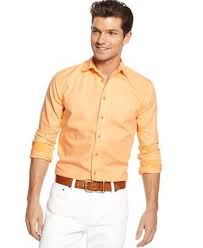
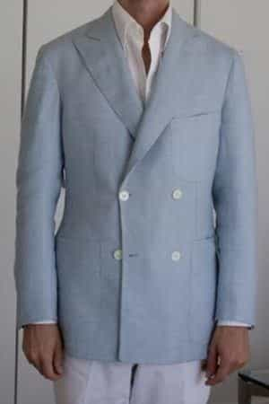
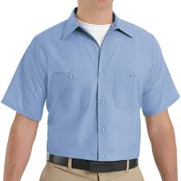
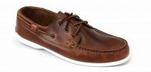

< < < Back
How To Dress Stylishly In Hot Weather – Return Of Kings
Summer is coming upon us, which means those who are students will be let out of school, those who work will likely be able to use their vacation time, women will wear progressively skimpier clothing, and all in all there will be barbecues and pool parties and all sorts of social endeavors you can participate in.
And when you are interacting with people, you of course must dress for success. And here in lies the confusion: many of the clothes that we associate with fashion are comparatively bulky and useless for the heat of the summer. While that is the case, don’t think that your fashion choices for the summer are limited to t-shirts, shorts, and flip-flops. You can dress cool, comfortable, and rakishly in the hottest of weather, to impress men and women alike.
The Standbys
The general rules of fashion that I discussed previously will apply as always. You’ve got to have the clothes fit well, complement each other in fabric make, pattern and colors, and match the occasion that you’re going to. Those rules apply whether it’s the hottest summer or the coldest winter, a night of jovial debauchery or the most somber of funerals. I will assume that you have already incorporated some of those into your wardrobe choices.
With that out of the way, let’s discuss the specifics of how you can look your best in the summer heat.
Fabrics
As you might expect, the first priority in dressing for the heat is to somehow nullify the weather’s effects on you…and as luck would have it there are several types of light, breathable fabrics you can wear!
Cotton is of course the lightweight fabric you are most likely familiar with, and most of your summer wear will be some sort of cotton weave, whether they be plain cotton (typically in the case of shirts) or some sort of heat-wicking cotton weave such as Seersucker (more commonly found in odd jackets and trousers).

Linen, made of flax, is the most formal summer fabric, being typically seen in white suits and odd trousers/jackets of similar light colors. Yours truly has been known to rock a white linen suit on occasion
A somewhat more unusual summer fabric is silk—more specifically, certain types of silk that are woven to be thin.

With all of these, bear in mind that they wrinkle and stain quite easily, so caution is the key.
Colors
The season surrounds you with bright ambient colors, and those same colors also dissipate the heat and humidity surrounding you. It is here in the summer, when concerns are light and fun is more of a prerogative than usual, that you can experiment with bolder colors and patterns. Try some pastels—light blue shirts, or gold, or patterns such as the aforementioned seersucker. As always be sure not to completely match all of your colors.

Jackets
If you’re going to be out “painting the town red”, you’ve got to dress like it. As usual, the sports coat is the interchangeable key (interchangeable meaning pieces that go with many other pieces, I could do a whole article just on interchangeability, watch for that in the future). Summer jackets are often unlined to reduce layers and thus reduce heat. However, the lack of a lining also means they are less formal than a lined jacket, and are best worn in semi-casual or business casual settings.
Another alternative are half lined jackets, which are just where they remove multiple layers of lining but leave one. These must be tailored very well, as a lack of lining means weird edges can be exposed. Due to their uniform navy blue color, I would avoid the blazer—if you need more formality, just get a white suit.
For the stickler, you can change your buttons as well. Light buttons such as horn or mother of pearl are fitting for the season.

Shirts
If you must be formal, a white cotton dress shirt will keep you relatively cool. However, if possible I would recommend a nice polo shirt or button down work-shirt (both of which are made of light, breathable cotton). These are formal enough for social functions, while not being so stiff that you can’t get physical should you need to.

Trousers
Seeing as you’re not giving off so much heat from your lower extremities, you can be a little more creative here. Black pants are a great contrast to the light colors of your jacket, or you can go with khakis/chinos or linens. Just make sure they don’t clash with your torso’s accouterments, and you’ll be fine.
Shoes
As usual, the shoes depend on what you are wearing elsewhere. Since you’ll likely be wearing light fabrics, try saddle shoes, boat shoes, or some other sort of brown leather casual shoe.

And lastly, dress for the occasion—if the occasion calls for swim trunks and nothing else, by all means go for that.
Read More: If You Dress Like An Attention Whore At Work, Expect To Be Treated Like One